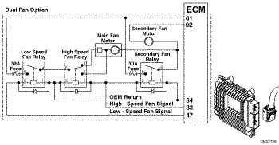
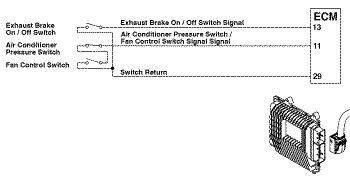
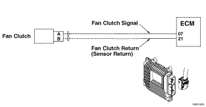
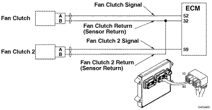
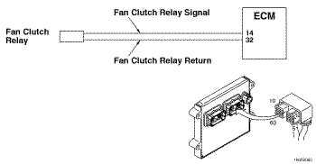
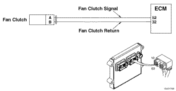

Código de Falha 2377
|
| CÓDIGO | RAZÃO | EFEITO |
| Código de Falha: 2377 PID: S033 SPN: 647 FMI: 3/3 LÂMPADA: Âmbar SRT: |
Circuito de Controle do Ventilador - Voltagem Acima da Normal ou com Voltagem Alta. Detectado um circuito aberto ou voltagem alta no circuito de controle do ventilador. |
O ventilador poderá permanecer ligado continuamente ou não funcionar. |
|
 ISF2.8 CM2220 E - Circuito de Controle do Ventilador
|
|
 ISF2.8 CM2220 AN - Circuito de Controle do Ventilador
|
|
 ISF3.8 CM2220/ISF3.8 CM2220 AN - Circuito de Controle do Ventilador
|
|
 ISB4.5, ISB6.7, ISD4.5 e ISD6.7 CM2150 SN/ISL8.9 CM2150 SN - Circuito de Controle do Ventilador
|
|
 ISM11 CM876 SN - Circuito de Controle do Ventilador
|
|
 ISZ13 CM2150 - Circuito de Controle do Ventilador
|
O circuito de controle do ventilador é um dispositivo utilizado pelo motor para controlar o funcionamento do ventilador. Quando o módulo eletrônico de controle (ECM) energiza o circuito de controle do ventilador, o ventilador é habilitado.
O circuito de controle do ventilador utiliza um sinal de modulação por largura de pulso (PWM). Um sinal de modulação por largura de pulso (PWM) é um sinal de voltagem por pulso entre 0 VCC e a voltagem do sistema. A frequência do sinal de voltagem por pulso depende das necessidades da aplicação.
Existem dois tipos de ventiladores suportados pelo circuito de controle: de velocidade variável e do tipo liga/desliga (ON/OFF). Use a ferramenta eletrônica de serviço INSITE™ para determinar qual tipo de ventilador está configurado para uso. O circuito de controle do ventilador varia de acordo com o fabricante do equipamento original (OEM). Alguns OEMs usam um retorno do solenóide que é conectado no ECM ou é ligado no bloco do motor ou no massa do chassi.
A localização do solenóide da embreagem do ventilador varia de acordo com o OEM. Consulte o manual de serviços do OEM.
Para ventiladores do tipo liga/desliga e de velocidade variável, o diagnóstico é executado quando o ventilador é desligado e ficará travado na posição ativa quando o sinal de PWM do ventilador for 100%. Para todos os outros tipos de ventilador, o diagnóstico é executado quando o sinal de modulação por largura de pulso (PWM) do ventilador é menor que 100% e ficará travado na posição ativa quando o sinal de PWM for 100%.
O sinal de PWM do circuito de controle do ventilador é detectado para um valor maior que 0 VCC quando o sinal é desligado pelo ECM.
Para ventiladores do tipo liga/desliga e de velocidade variável, o diagnóstico apagará a luz quando o ventilador for desligado e o diagnóstico é executado com êxito. Para todos os outros tipos de ventilador, o diagnóstico apagará a luz quando o sinal de modulação por largura de pulso (PWM) for menor que 100%.
As possíveis causas desta falha são: